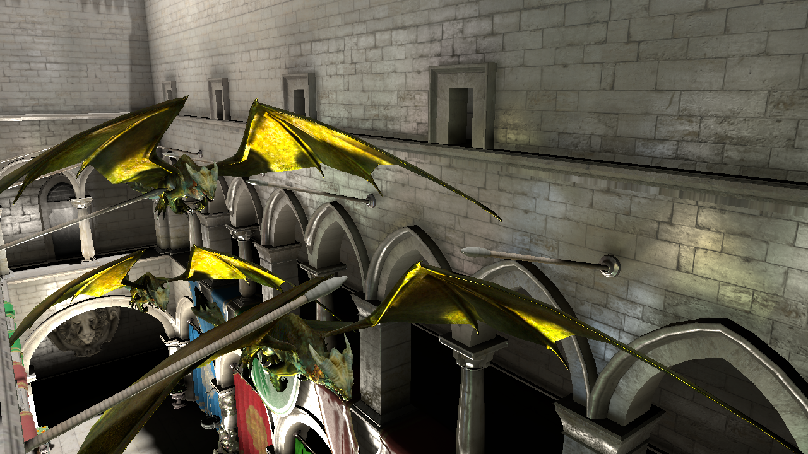

Layered Reflective Shadow Maps for Voxel-based Indirect Illumination

Masamichi Sugihara
Advanced Rendering Technology, Intel
Randall Rauwendaal
Oregon State University
Marco Salvi
Advanced Rendering Technology, Intel
Conference High-Performance Graphics 2014
Abstract
We introduce a novel voxel-based algorithm that interactively simulates both diffuse and glossy single-bounce indirect illumination. Our algorithm generates high quality images similar to the reference solution while using only a fraction of the memory of previous methods. The key idea in our work is to decouple occlusion data, stored in voxels, from lighting and geometric data, encoded in a new per-light data structure called layered reflective shadow maps (LRSMs). We use voxel cone tracing for visibility determination and integrate outgoing radiance by performing lookups in a pre-filtered LRSM. Finally we demonstrate that our simple data structures are easy to implement and can be rebuilt every frame to support both dynamic lights and scenes.
Downloads
Full-Text PDF (13.5 MB)
Links
Citation
M. Sugihara, R. Rauwendaal, and M. Salvi, Layered Reflective Shadow Maps for Voxel-based Indirect Illumination, In Proceedings of High-Performance Graphics (2014).
Bibtex
@inproceedings{Sugihara2014,
author = {Masamichi Sugihara and Randall Rauwendaal and Marco Salvi},
title = {Layered Reflective Shadow Maps for Voxel-based Indirect Illumination},
pages = {117--125}
year = {2014},
DOI = {10.2312/hpg.20141100},
journal = {Proceedings of High Performance Graphics 2014},
}